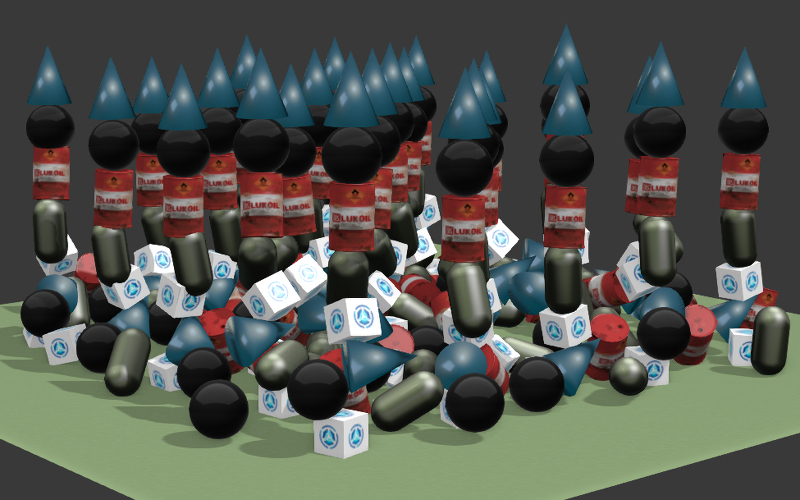
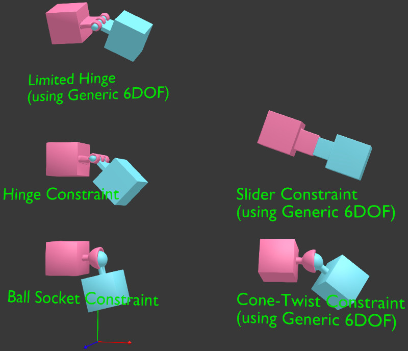
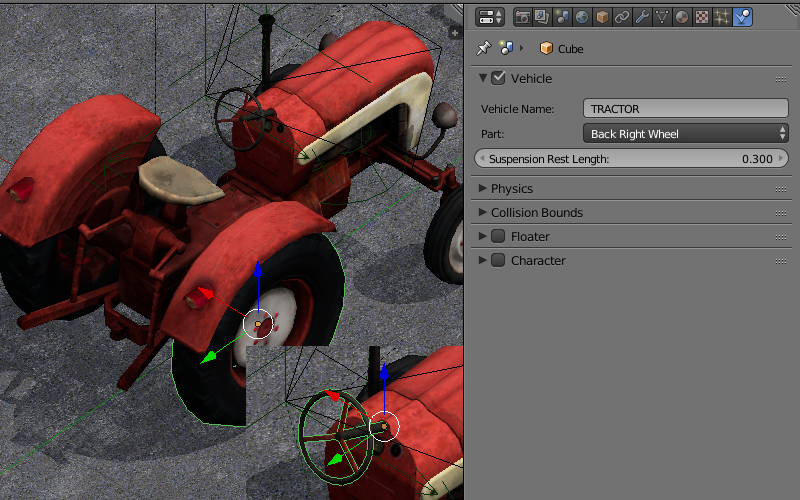
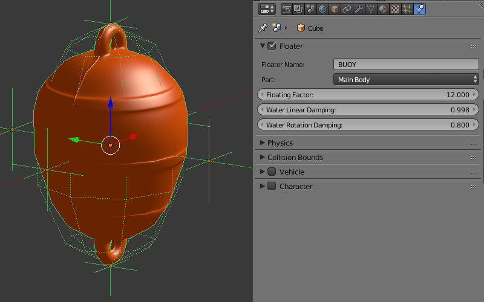
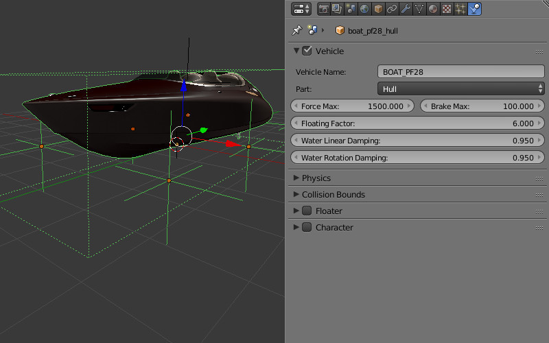
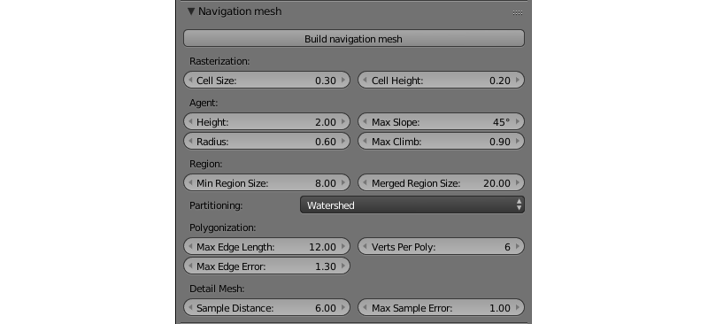

物理¶
目录

静态物理类型¶
可以用来限制其他物体的运动，例如与地形、墙壁碰撞等。在物理学中的此类物体的 Static 值 （默认设置） 设置应选择 Physics Type 选项。

一个网格可以分配到一个或多个物理材质。根据 Material 面板的 Special: Collision 选项卡必须被激活。
{kind=link}
Ghost 选项排除物理相互作用的材质，但仍将通知应用它的接触。示例 - 检测角色坐在垂直梯子上。
{kind=link}
Collision ID 的字段用于检测与指定的材质碰撞，可以留空。 Collision ID 用法的一个示例，检测地形表面的角色位于-草，沙子，木制涂层等等。
Margin 字段允许自定义在哪里网格的碰撞区域的宽度。此选项提高了物理碰撞模拟稳定性。
还有，在此面板中有一些材质物理设置。支持以下设置: Friction, Elasticity.
Collision Group 字段对应于材质属于的物理组。Collision Mask 字段定义这种材质将与之交互的所有物理组。
动态物理类型¶
专为刚体运动仿真。
{kind=link}
Object Physics 复选框必须在物体 Physics 面板下启用。Collision ID 字段用于检测与特定的物体的碰撞 （例如，用于检测FPS 角色和不同项目接近程度），可以留空。
在这样一个物体的 刚体 （旋转）或 Dynamic （不旋转）的值的物理设置可以在 Physics Type 选项选择。在 Collision Bounds 设置碰撞体类型可以选择 - 支持的类型有：Box，Capsule，Sphere，Cylinder，Cone 。同时，下面的物理参数可以设置：Mass，Damping - 为 Translation 和 Rotation。
Collision Group 字段对应于物体所属的物理组。
Collision Mask 字段定义此物体将与之交互的所有物理组。

这类物体的材质支持 Friction 和 Elasticity 。当多个材质广泛应用于一个单独的网格时，物理参数取自其中的第一项。
因为相机物体 Physics Type = Dynamic 参数必须使用，并且必须启用 Object Physics 复选框。
约束¶
物理约束用来限制物体的自由度。
{kind=link}
向物体添加物理约束 (Rigid Body Joint) 可以在 Object Constraints 面板上执行 。受支持的类型 (Pivot Type) 是: Ball, Hinge, Cone Twist, Generic 6 DoF. 物理约束可以添加到两个相互作用的物体之一，而另一个物体作为 Target 。这两个物体可以有静态和/或动态的物理类型。在约束 （除外 Ball) ，可以设置的平移和旋转的限制。

轮式的车辆¶
车辆的模型必须包含 6 单独的物体 - 机箱、 4 个轮子和一个方向盘。机箱的网格中心应该对应于质量的中心。车轮对和方向盘的中心网格应位于旋转轴。方向盘应该面向在本地空间的坐标 -X-旋转轴，Y-向右和 Z-向上。该物体可以具有任何名称。
{kind=link}
所有的6个物体 ︰ 选择 Part，在 Vehicle Name 字段中指定相同的 id，选择正确的物体类型- Chassis, Steering Wheel, Back Right Wheel 等等。 Suspension Rest Length 设置对车轮可用。
有必要指定机箱的真实质量 （因为默认值是仅 1 公斤）。做这件事先到物理设置，选择物理类型 Rigid Body 的 Physics Type 选项并指定 Mass 所需的值 （例如，1000 公斤） 字段。
底盘设置¶
- Force Max
车辆最大驱动力。
- Brake Max
最大制动系数。
- Suspension Compression
阻尼系数为悬浮舒展。
- Suspension Stiffness
悬架刚度系数。
- Suspension Damping
悬架阻尼系数。
- Wheel Friction
车轮和表面之间的摩擦系数。现实车辆它应该是 0.8 左右。但是，显著提高它能够实现更好的控制 （1000 和更多）。
- Roll Influence
减少车轮的扭矩降低车辆倾覆概率 (0-无力矩、 1-真正的物理行为)。
- Max Suspension Travel Cm
以厘米为单位的最大悬挂行程。
对 Steering Wheel 必须指定的是方向盘的最大角度 (Steering Max) 以及方向盘和轮胎转动之间的比值 (Steering Ratio). 最大方向盘转角设置值为圈。一圈等于360度。因此，如果 Steering Max 等于一以及 Steering Ratio 等于10的话，方向盘转360度前轮转36度。
在这个时候你可以导出并加载场景到引擎。我们建议您创建一个物理材质的路面。要在查看器中选择控制的物体按 Q 并选择机箱。使用 W, A, S, D 用作控件。
此外，我们可以调整 Damping of Translation and Rotation 。这将影响汽车惯性与速度。
道路路面材质的摩擦和弹性不会影响车辆的行为。
浮动物体¶
{kind=link}
为了使要浮在水面上 （用 Water 材质物体） 的物体，就必须使 Floater 面板启用。有两种类型的浮动物体: Main Body - 动物体本身和 Bob - 辅助bob-物体让漂浮执行。浮动物体可以有无限的多个 Bob 物体。可以是网格或 Empty 物体。
相同的浮动物体包含的一部分的所有物体必须 Floater Name 字段中都具有相同的名称。
浮动交通工具或叫船舶¶
{kind=link}
船舶使用 Vehicle 设置的一些参数和 Floater 设置的所有设置。它是必要的主要物体上 Part 类型的 Hull 设置 。类似于浮动物体船只需要辅助 Bob 物体。
角色¶

这个功能可以通过点击 Physics 面板上的同名标签的标题 Character 复选框被激活。
从引擎的角度来看，角色本身是一类适当的物理物体，该物体可以与其他物理物体发生碰撞或受到物理力如重力和浮力的影响。
角色物体可以使用多种API方法，由他们的名字 character 关键字容易控制。所有这些方法驻留在 physics API模块。
角色设置¶

所有设置列出在这里在激活 Character 选项卡后可用。
- Walk Speed
此参数设定一个角色行走的速度（以米每秒为单位）。这个参数的可能的最低值是零，而最高为10。
它的默认值是4。
- Run Speed
这是奔跑角色（以米每秒为单位测得的）的速度。其值可以从零到20变化。
此参数默认设置为8。
- Step Height
这是一个该角色可以超越（米）的障碍最大高度。这个参数的值可以从零到1变化。
此参数的默认值是0.250。
- Jump Strength
此参数设置人物跳跃的力量。其最小值是零，而其最大值为50。
默认设置为5。
- Waterline
这个参数设置的角色物体的水线。水线从物体（不是物体的网格）的物理形状的中心测量的。如果物体被浸入水在该线以下的，它会漂浮。其值可以改变从-2到2。
默认情况设置为零 。
基本角色¶
Blend4Web引擎有快速建立用户控制的第一人称角色的选项。这样的角色将只有非常基本的功能，但也可以没有任何编程的情况下设置。
要建立一个基本角色，请按照下列步骤操作：
选择您想要作为一个角色使用一个物体。
启用选定物体的物理和物理设置类型到
Dynamic或Rigid Body.启用该物体的角色选项。
创建一个新的相机或选择一个现有的和其类型设置为
Eye。
现在，带有摄像头的基本角色将出现在您的场景。
该角色可大致和常规 Eye 式照相机相同的方式作为进行控制：
WASD键移动角色。
摄像头角度由方向键控制或移动鼠标按住左按钮。
按C键切换飞行模式（默认启用）。
注解
只有一个基本角色可存在于场景中。如果场景中有多个角色，该引擎将使用他们的第一个基本角色，而忽略其他。
使用API控制角色¶
上述基本角色只能提供通用功能。如果您需要更多的角色行为控制，您应该使用 fps 模块的以下方法。
其中最重要的是 enable_fps_controls() 方法，就像它名称一样，方法用于初始化场景中的角色。它可以如下使用：
var m_fps = require("fps");
m_fps.enable_fps_controls();
应该在应用程序开始时使用此方法（在 load_cb 函数中）来启用角色控制。
注解
此方法可能与前述的启用基本角色 enable_camera_controls() 方法冲突。这两种方法不能同时使用。
该方法还具有以下可选参数：
character设置角色物体。可以通过调用 get_first_character() 方法检索到角色的链接。如果场景中存在多个角色，则应该使用它。
element指定HTML元素添加侦听器的方法。
motion_cb指定当角色改变方向时调用的回调函数。
gamepad_id指定插入系统的游戏手柄的ID。
forward_sens,backward_sens,right_sens,left_sens,jump_sens,fly_sens- 这些参数用来设置一列传感器的类型来指定角色行为如在不同的方向走，跳跃等等。
rotation_cb指定当一个角色或者相机旋转时调用的回调函数。
lock_camera- 将此参数设置为true将会将场景摄像头父物体设置为角色。
其他重要的方法是 set_cam_sensitivity() 和 set_cam_smooth_factor(). 第一个设置相机的灵敏度（由数字值在零到100之间定义）。第二种方法定义了相机移动的平滑度（由0到1.0之间的值定义）。
角色状态¶
角色状态是表示角色当前行为的常数值（它当前是否走动或执行任何其他操作）。场景中的每个角色总是也仅能拥有一个状态。
可用角色状态：
可以使用 get_character_state() 方法检索特定角色的当前状态，而特定状态可以通过 switch_state() 方法分配给角色。以下示例显示了如何使用这两种方法：
var m_fps = require("fps");
var current_state = m_fps.get_character_state();
if (current_state == m_fps.CS_FLY)
m_fps.switch_state(m_fps.CS_WALK);
动作绑定¶
fps 模块还提供了将各种动作绑定到角色事件的手段。以下是 bind_action() 方法的使用：
var m_fps = require("fps");
var m_ctl = require("controls");
var action_cb = function(value) {
console.log("Q key pressed.");
}
m_fps.bind_action(m_fps.AT_PRESSED, [m_ctl.KEY_Q], action_cb);
该方法具有以下参数：
第一个参数是动作的类型：
AT_CONTINUOUS - 一种输入类型，用于检测连续的用户操作，例如鼠标移动，键盘按键，手柄按钮倾斜等。
AT_PRESSED - 此输入类型检测离散的用户操作，例如按下按钮。
AT_RELEASED - 检测按钮（鼠标，游戏手柄或键盘）被释放的输入类型。
第二个参数定义了一组传感器类型（如键盘键，游戏键按钮或鼠标动作）。
action_cb 是一个回调函数，将在每次用户执行第一个参数定义的动作时被调用。
导航网格¶
导航网格 (通常缩写 navmeshes) 是用来消除需要额外计算比如碰撞等使寻路更加简便的网格物体。

在此示例中 （取自代码片段），导航网格用于生成通过迷宫的路径。
创建导航网格¶
若要将物体生成 navmesh，打开 Physics 面板的 Object Physics 参数 ，从 Physics Type 列表中选择 Navigation Mesh 。

导航网格也可以使用特定的工具手动创建或生成自动。
{kind=link}
注解
此工具是原产于Blender并不是 Blend4Web 引擎的一部分。
此导航网格生成接口可以发现专用面板下的 Scene 选项卡上，但此功能是为了实时应用程序，它仅音引擎类型设置为 Blend4Web 或 Blender Game 才显示（Blender内部、 Cycles 或任何其他渲染引擎不会有显示）。
在此面板上的主要工具是 Build Navigation Mesh 按钮。正如标题所暗示的它用来建设基于当前选定对象的导航网格。Navmesh 是作为一个单独的物体放置在所选的物体上面，因此保留该物体创建的。
除了此按钮 Navigation Mesh 面板为用户提供了几组参数将生成 navmesh 进行微调。
Rasterization （栅格化）组的参数︰
- Cell Size
栅格化单元格大小。更大的值会导致更大的 navmesh 多边形。最高的可能值是 1.0。默认值为 0.3。
- Cell Height
栅格单元格高度 （navmesh 和生成它的对象之间的距离）。默认值为 0.2。
Agent 组的参数︰
- Height
最小高度，代理还能走路。默认值为 2.0。
- Radius
代理的半径。默认值为 0.6。
- Max Slope
代理能够行走的坡度的最大角度。以度为单位。默认值为 45。
- Max Climb
网格单元格之间的最大高度，代理可以爬上。默认值为 0.9。
Region 组的参数︰
- Min Region Size
一个区域的最小大小 （较小的区域将被删除）。默认值为 8.0 级。
- Merged Region Size
一个区域的最小大小 （较小的地区，将合并）。默认值为 20.0。
- Partitioning
用于分区导航网格的方法。受支持的方法是︰
Monotone是最快的方法。使用它可以生成细细长长的多边形。Layers— 速度较慢，但仍然相当快的方法，可产生更好的三角剖分比单调（Monotone ）分区。Watershed— 经典重铸生成最好的剖分分区方法。此选项是默认选中的。
Polygonization 组的参数︰
- Max Edge Length
边缘轮廓最大长度。默认值为 12.0。
- Max Edge Error
从轮廓到单元格的距离最大误差。默认值为 1.3。
- Verts Per Poly
每个多边形顶点的最大数目。默认值为 6。
Detail Mesh 组的参数︰
- Sample Distance
详细信息网格采样间距。默认值是 6.0。
- Max Sample Error
最大误差的网格简化算法。默认值为 1.00。
在应用程序中的使用¶
物理系统是在 uranium.js 模块中实现，并分别从引擎的主要代码加载。Uranium.js 模块本身是 Bullet 物理引擎的修改版，移植在浏览器中工作。为了激活物理系统，这就需要将 uranium.js 和 uranium.js.mem 文件跟应用程序的源代码放在同一个目录。
另一个方法是通过使用下面的 API 方法显式指定 uranium.js 模块的加载路径 ︰
m_config.set("physics_uranium_path", ".../uranium.js");
注解
当开发应用程序 使用了SDK, 自动检测到物理引擎的路径。
如果您的应用程序不使用物理，我们建议您在Blender场景选项卡中 Physics 面板下关闭 Enable Physics 的标志。它也是可以通过调用下面的方法初始化引擎前强行禁用加载 uranium.js 模块 ︰
m_config.set("physics_enabled", false);